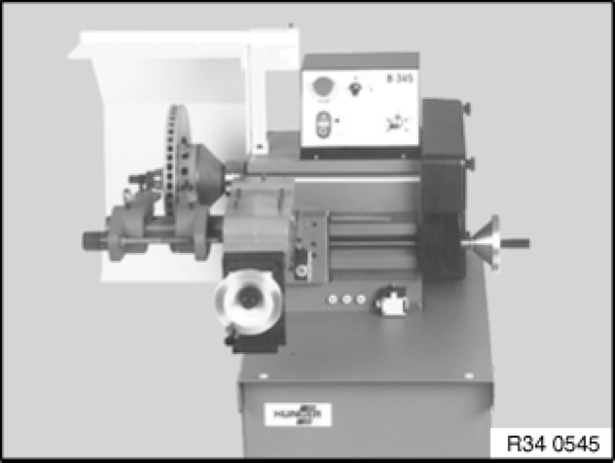
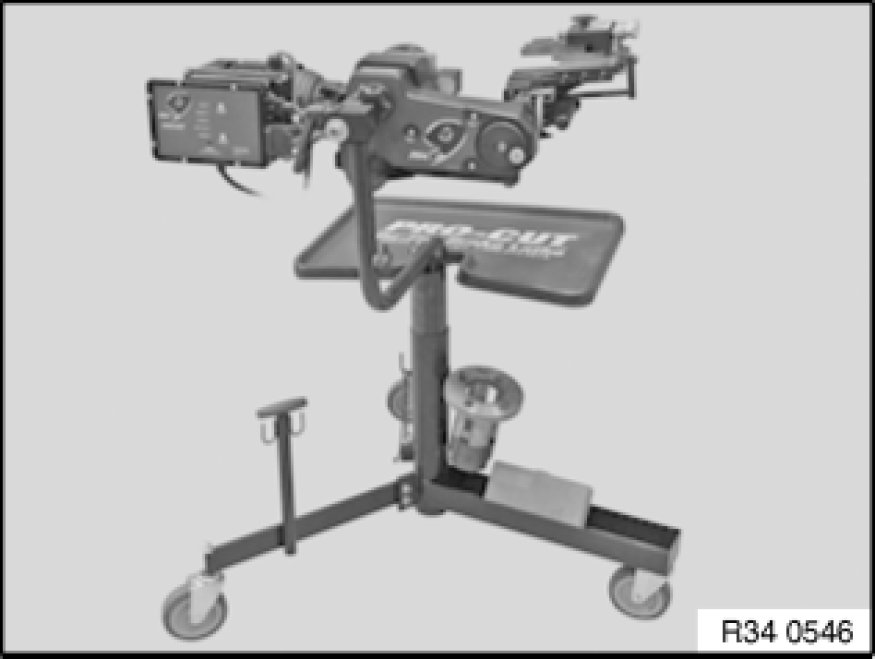
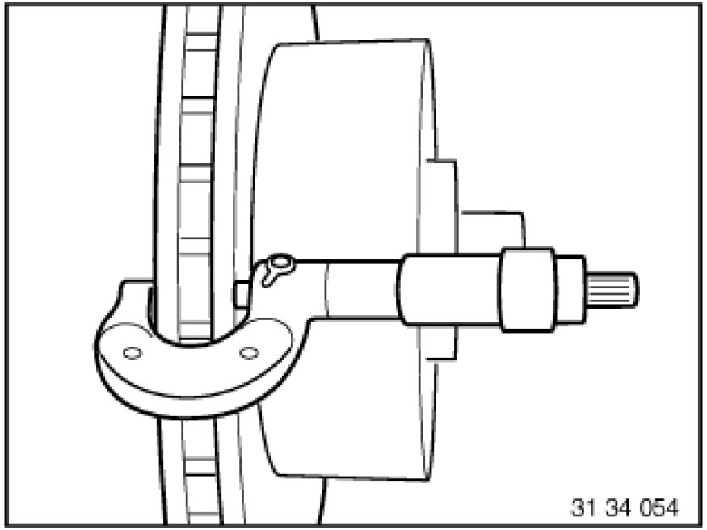

Precision-Turning Both Front Brake Discs on Both Sides
34 11 667 - Precision-turning both front brake discs on both sides

Important!
Always precision-turn both sides of both brake discs on one axle.
Observe Max. machining dimension per friction ring side [1][2]34 11 Front Brake
Minimum brake disc thickness (MIN TH) [1][2]34 11 Front Brake
Brake discs of M models (Compound brake discs) must not be machined!
Only one brake pad set may be used up on brake discs which have been lathe-turned to minimum thickness (MIN TH) [1][2]34 11 Front Brake.

Stationary brake disc lathe:
Important!
Only BMW-approved brake disc lathes may be used!
In the case of stationary brake disc lathes, the brake disc must be removed Removing and Installing/Replacing Both Front Brake Discs.
Please refer to the lathe manufacturer's instruction manual for the exact procedure.

Mobile brake disc lathe:
Important!
Only BMW-approved brake disc lathes may be used!
In the case of mobile brake disc lathes, the brake caliper Removing and Installing/Replacing Left or Right Front Brake Caliper and the brake anchor plate must be removed.
The brake discs remain on the car.
Please refer to the lathe manufacturer's instruction manual for the exact procedure.

After fine-grinding the brake discs, measure the thickness difference [1][2]34 11 Front Brake inside the braking surfaces at 8 points with an external micrometer.